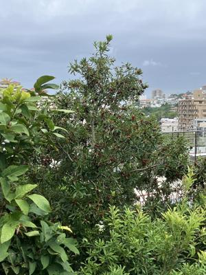
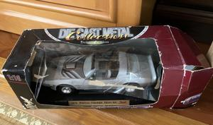

うるがいの話 ある日
最新: 外国語【うるがいの話 ある日】とは 一日だけのプログです
『うるがいの話』の最新一日だけのプログで、通信料が少なく経済的だ。カニの画像をクリックすると全ての日付が載る『うるがいの話』サイトを表示します
|
|
【うるがいの話】 うるがい(ｳﾙｶﾞｲ urugai)とは、『もずくがに』の名前でとても大きくなります。 |
|---|---|
|
|
【カミマヤーの話】 猫のことを方言でマヤーといいます。カミマヤー（kamimayaa）とは、神の猫のことです。 |
|
【たながぁの音楽】 たながぁ（ﾀﾅｶﾞｰ tanagaa）とは手長えびのことで、何種類かあり大きいのは車 エビぐらいになります。 |

|
【ぶながぁの話】 ぶながぁ(ﾌﾞﾅｶﾞｰ bunagaa)とは、赤い髪の毛、赤い身体、そして身長は１ｍ２０ｃｍ ぐらい、川の蟹を食べているの目撃された。場所は沖縄県国頭郡大宜味村のと ある村僕の隣近所に住んでいる爺さんから、聞いた話です。 |
|
|
【ギーマの話】 ギーマ(giima)とは、山原の里山に咲くスズランに似た、 花を付けます。実は食べられます、 気が付くと口の周りが紫になっています。 |
2025年05月09日 (金）外国語
15:16
食べ頃のヤマモモ

『ＣＤ ＢＯＯＫ 台湾語が１週間でいとも簡単に話せるようにな
る本』、ふん！、詐欺だぜ。４ヶ月もかかって、やっとㄅㄆㄇ注音
符號發音練習（あいうえお）から、挨拶『はじめまして、どうぞよ
ろしくお願いします』の頁に着手する。
初次見面，請多指教！（chūcì jiànmiàn, qǐng duō zhǐjiào）
コドモからもらった本を参考に、更に理解し易いユーチューブ動画
を探し、学習し始める。
この前、誰かさんの図書館の貸し出しシートに載っていた英語の本
ラダーシリーズの、レベル４アガサ・クリスティーの『ＡＢＣ殺人
事件』を読み終えた。で
Not from Catption Hastings' Personal Narrative
ヘイスティングス船長の個人的な物語からではない
意味がいまいち分からない、ネットで翻訳すると
ウーン、やはり分からない。単に読解力なのか、日本語の訳された
本を図書館から借りることに、そして電子書籍が読めた。なるほど
『この部分はヘイスティングス大尉の手記でない』。まだまだです
ね・・・・。
ところで、この前レベル２の『フランダースの犬』を読んだのです
よ、ふかくのも涙が・・。でも、レベル２なんだけど意味が分から
ない箇所が多くて、これでいいのだろうかと思い、アマゾンから古
本を購入、復習することにした（なんと真面目なんだろう）。目標
は、いずれ『白鯨』の原作を読むことですよ。
マンションから、ヨメの弟のものだったであろう玩具を、コドモが
メルカリに６千円で売れたと、包装や郵送の経費が１千４百円らし
い。ヨメの妹が狙っていたのだが。
